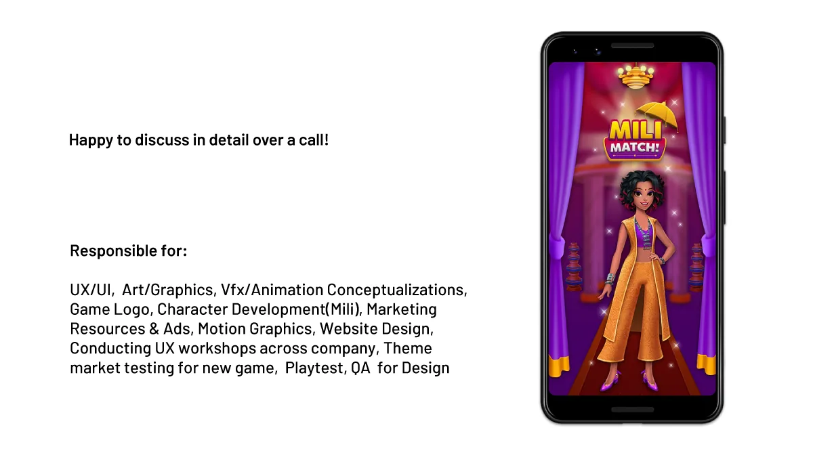
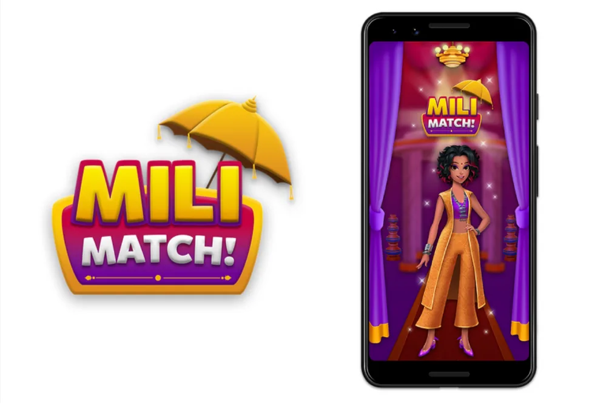
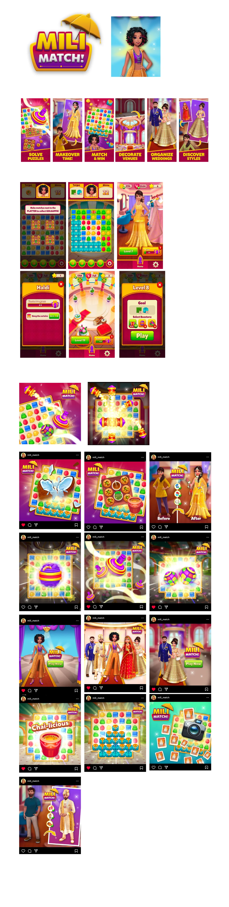

A hyper-cultural casual match-3 at Giga Fun Studios, themed around the Indian wedding and led by a custom protagonist, Mili. Targeted tightly at young Indian women. Ten months from concept to ship. Experience designer across UX, flows, character development, motion, graphics, video ads, marketing, website, and in-company UX workshops — with a dedicated UI artist producing in-game UI to direction.

The Travel Match project (the previous case in this portfolio) demonstrated what theme-as-strategy looks like at scale — a broad theme designed to cut across age and gender and reach the widest casual demographic possible. Mili Match started from the opposite strategic posture. The brief: win on narrowness. Pick one audience. Make a game they can feel seen by.
The audience was young Indian women — a casual-gaming segment underserved by the global match-3 catalogue, which either flattens cultural specificity into a generic "candy / kingdom / home" frame, or treats Indian audiences as an afterthought skin. The hypothesis: a game built for this audience from the character outward, rather than adapted toward it from a neutral starting point, would produce a stronger emotional return per player, even with a smaller total addressable market.
Mechanically, this is a classic case of the tight-niche vs broad-reach trade-off. A smaller audience, engaged more deeply, can outperform a larger audience engaged shallowly — a pattern Kevin Kelly captured in his "1000 True Fans" essay and that F2P market data continues to validate: ARPDAU rises disproportionately when the audience feels the product was made for them specifically.
Look at the match-3 titles that have compounded into generational businesses and one pattern holds: they all have a person at the centre. Royal Match has the king. Homescapes has Austin the butler. Gardenscapes has Austin's garden predecessor. Toon Blast has the bear-lion-cat trio. The core loop is tile-matching; the emotional loop is always someone the player is playing for.
This is the difference between theme and character. Theme decorates the canvas the player paints on. A character decorates the player's sense of the game. Theme is place; character is presence. Theme can change; character carries the product across reskins and seasonal content and feature launches. Once you love someone in a game, you'll keep showing up to spend time with them — even when the level content is boring, even when the puzzle is frustrating. Character forgives design sins that theme cannot.
For Mili Match, this meant the protagonist was not a downstream art deliverable. Mili was the load-bearing design decision. Everything else — the wedding theme, the light meta structure, the UI ornamentation, the motion language — had to be built downstream of who Mili was, how she moved, how she'd react to what the player was doing.

Mili is a young Indian woman on a red carpet. Her outfit — an orange lehenga-pants fusion with a purple sleeveless top, layered Indian jewellery, pointed heels — holds the design thesis in one frame. Modern silhouette, rooted vocabulary. Aspirational, but grounded. She could be any audience member's slightly-braver sister, not a fantasy ideal.
Every design choice around Mili was a targeting decision:
Match-3 meta systems come in two flavours. Heavy meta — Royal Match, Homescapes — layers renovation, restoration, or empire-building on top of the puzzle; the player is continually dragged forward through a long narrative arc tied to currency sinks. Light meta trades the grind for ambient presence; the player returns to be with the character and her world, not to advance a quest timer.
Mili Match was built deliberately on the light side of this axis. The bet: a young-woman audience playing in short sessions between other things — at work, on transit, before bed — would prefer a meta layer that felt like visiting over one that felt like working. Grind meta is calibrated to whale behaviour; light meta is calibrated to dailiness.
Practically, this changed what the meta had to hold:
A character-driven casual match-3 is a deeply cross-functional product. For Mili Match the Experience Designer role stretched across twelve distinct surfaces, each doing different strategic work for the same product. A dedicated UI artist collaborated specifically on in-game UI assets, producing work to the direction I set; everything else in the list below sat with me.
A 10-month timeline across 12 surfaces only works if the design system absorbs duplication — the same discipline that carried Travel Match carried here too, with higher demand on character-related assets (every new costume, every new meta moment, every new ad needs Mili rendered consistently). The design system wasn't a deliverable alongside the game; it was the only reason one person could run the game to ship.
There's a habit in global-facing casual products to chase a demographic by adding them as an option — a brown skin tone in the avatar menu, a Diwali-themed seasonal event, a Bollywood licensing deal pinned to a festival quarter. These additions are real, and they matter, but they're categorically different from designing a product from the cultural core outward.
Mili Match was the second kind. The wedding framing wasn't chosen because it would translate well globally — it was chosen because the target audience's emotional lexicon includes weddings as a shared cultural event, and the game's meta rhythm could mirror that. The character wasn't given an Indian name because "Indian options are good for diversity." She was named Mili because the game was for women who know women named Mili, Mahi, Riya, Anjali — and for whom the first cultural signal at the title screen determines whether they install or swipe past.
The broader design principle is that authentic cultural specificity is a product asset, not a localisation afterthought. A generic product with add-on cultural layers rarely achieves the emotional attachment that a specifically-designed product does. This is the same logic — inverted — that large tech companies rediscover every few years when they launch a region-specific product that outperforms their flagship in that region.

Mili Match shipped on time. The character-driven thesis held: Mili didn't collapse into wallpaper under production pressure, and the wedding-themed meta stayed light rather than drifting into grind when milestone decisions got tight.
The project sits as a counterpoint to Travel Match in the same portfolio. That one asked "how wide can theme reach?" This one asked "how deep can one character hold?" Both questions are real; both have real answers; a casual-games design practice needs to be fluent in asking either one depending on the brief.
More than the specific ship, the bigger deliverable was the process confidence to start from a protagonist rather than a puzzle. Starting from the puzzle is the default — it's what the genre rewards and what the design templates encourage. Starting from a person is riskier, requires more polish, demands a design system that can scale the character across every surface, and produces games that feel recognisably different from the shelf.
For a solo experience designer, running that process across twelve surfaces in ten months is a specific kind of evidence: that the practice can carry a character-first game end-to-end, and that the next one — a bigger, more ambitious character-first product — could be run with the same discipline.